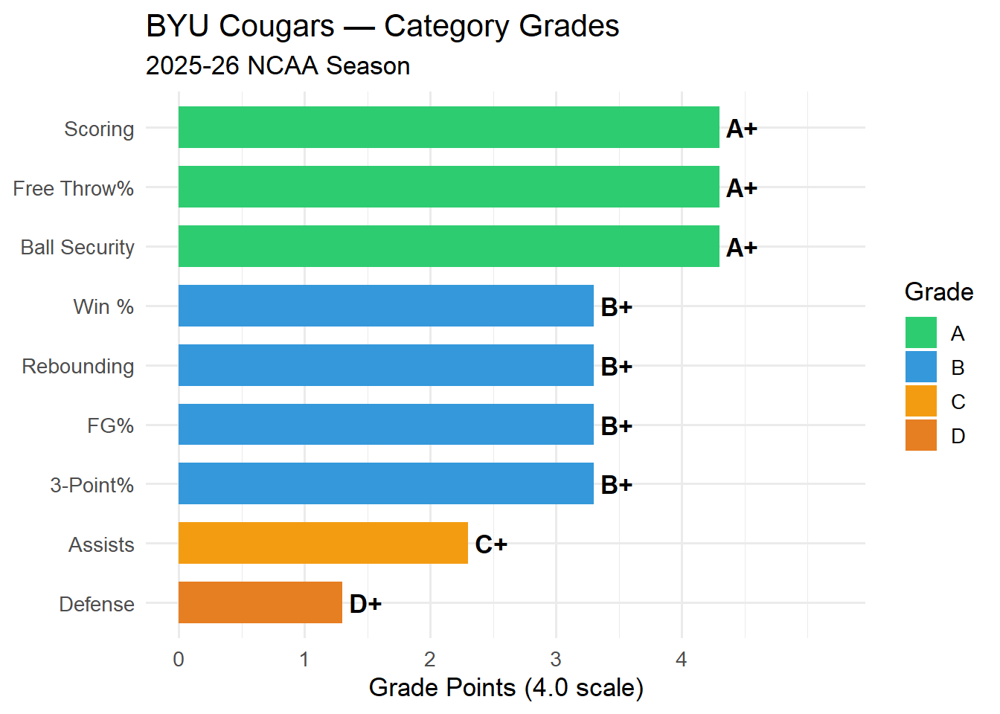
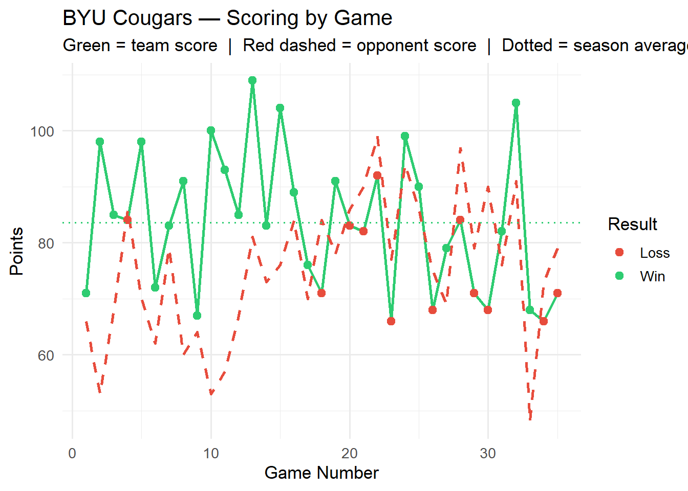
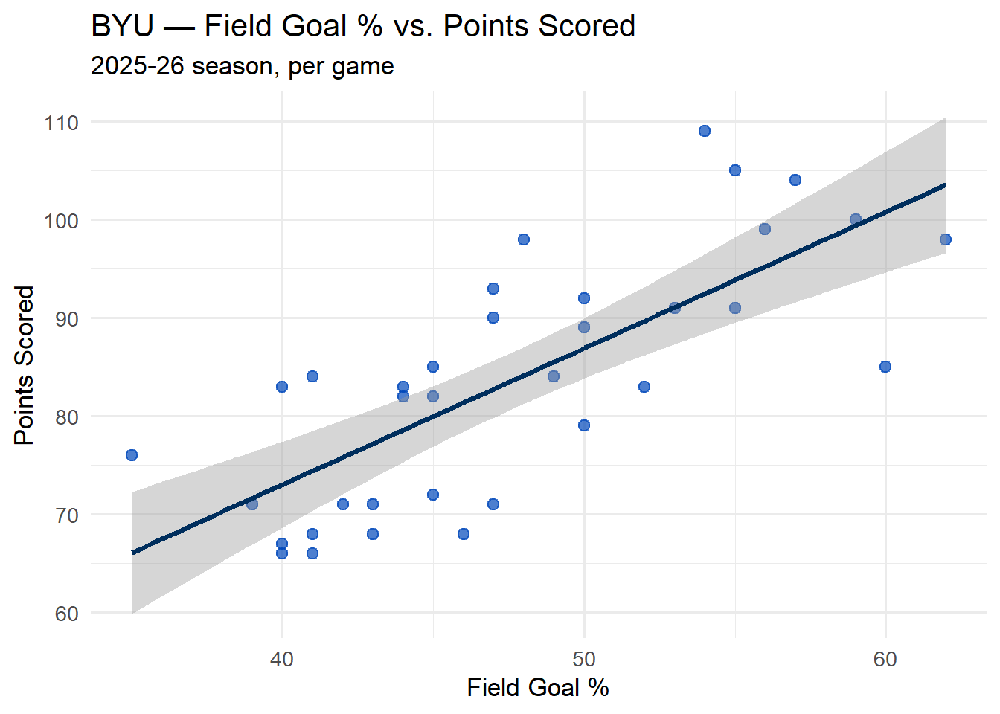
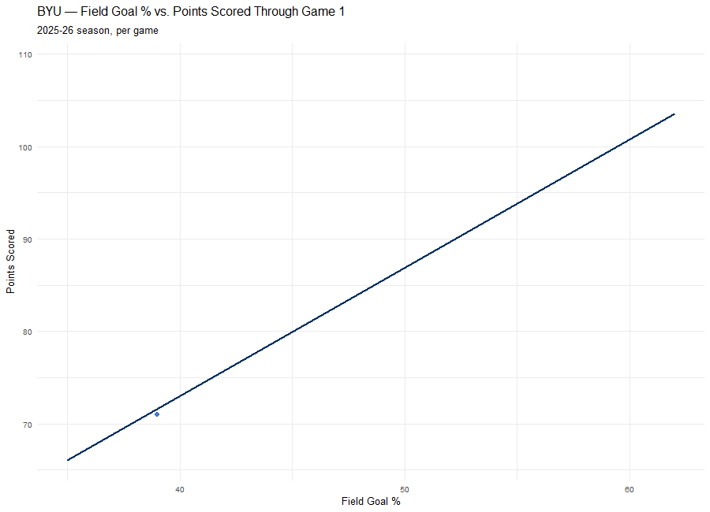

Show code
library(hoopR)
library(dplyr)
library(readr)
library(ggplot2)
library(tidyr)

library(hoopR)
library(dplyr)
library(readr)
library(ggplot2)
library(tidyr)# ============================================================
# FILL IN YOUR INFO BELOW — this is the only section
# you need to change each time you run this report.
# ============================================================
# Which team do you want to grade?
# Use the school's common name exactly as ESPN lists it.
# Examples: "Duke", "Kansas", "Houston", "Gonzaga", "Alabama State"
my_team <- "BYU"
# Which season? Use the year the season ENDS.
# Example: the 2025-26 season is written as 2026.
season_year <- 2026
# Season label shown in the report (for display only)
season_label <- "2025-26"
# ============================================================
# THAT'S IT — scroll down to render and read your report.
# ============================================================Record: 23-12 (65.7% win rate) | Games Graded: 35
Overall Season Grade: B+
grade_colors <- c("A"="#2ecc71","B"="#3498db","C"="#f39c12","D"="#e67e22","F"="#e74c3c")
ggplot(grade_df, aes(x = reorder(Category, GPA), y = GPA, fill = Grade_Group)) +
geom_col(width = 0.7) +
geom_text(aes(label = Grade), hjust = -0.2, fontface = "bold", size = 4.5) +
scale_fill_manual(values = grade_colors, name = "Grade") +
scale_y_continuous(limits = c(0, 5.2), breaks = c(0,1,2,3,4)) +
coord_flip() +
labs(
title = paste(team_name_full, "— Category Grades"),
subtitle = paste(season_label, "NCAA Season"),
x = NULL,
y = "Grade Points (4.0 scale)"
) +
theme_minimal(base_size = 13) +
theme(legend.position = "right")
trend_data <- team_data %>%
mutate(
game_date = as.Date(game_date),
team_score = as.numeric(team_score),
opp_score = as.numeric(opponent_team_score),
result = ifelse(team_winner == TRUE, "Win", "Loss")
) %>%
arrange(game_date) %>%
mutate(game_num = row_number())
ggplot(trend_data, aes(x = game_num)) +
geom_line(aes(y = team_score), color = "#2ecc71", linewidth = 1) +
geom_line(aes(y = opp_score), color = "#e74c3c", linewidth = 1, linetype = "dashed") +
geom_point(aes(y = team_score, color = result), size = 2.5) +
scale_color_manual(values = c("Win"="#2ecc71","Loss"="#e74c3c"), name = "Result") +
geom_hline(yintercept = avg$pts, linetype = "dotted", color = "#2ecc71", linewidth = 0.7) +
labs(
title = paste(team_name_full, "— Scoring by Game"),
subtitle = "Green = team score | Red dashed = opponent score | Dotted = season average",
x = "Game Number",
y = "Points"
) +
theme_minimal(base_size = 13)
summary_tbl <- data.frame(
Statistic = c("Points Per Game", "Opp. Points Per Game", "Point Differential",
"Field Goal %", "Three-Point %", "Free Throw %",
"Rebounds Per Game", "Assists Per Game",
"Steals Per Game", "Blocks Per Game", "Turnovers Per Game"),
Value = c(
sprintf("%.1f", avg$pts),
sprintf("%.1f", avg$opp_pts),
sprintf("%+.1f", avg$pt_diff),
sprintf("%.1f%%", avg$fg_pct),
sprintf("%.1f%%", avg$three_pct),
sprintf("%.1f%%", avg$ft_pct),
sprintf("%.1f", avg$reb),
sprintf("%.1f", avg$ast),
sprintf("%.1f", avg$stl),
sprintf("%.1f", avg$blk),
sprintf("%.1f", avg$tov)
)
)
knitr::kable(summary_tbl, align = c("l","r"), col.names = c("Statistic","Season Avg"))| Statistic | Season Avg |
|---|---|
| Points Per Game | 83.5 |
| Opp. Points Per Game | 75.4 |
| Point Differential | +8.1 |
| Field Goal % | 47.6% |
| Three-Point % | 34.2% |
| Free Throw % | 75.2% |
| Rebounds Per Game | 38.1 |
| Assists Per Game | 13.3 |
| Steals Per Game | 7.2 |
| Blocks Per Game | 4.4 |
| Turnovers Per Game | 10.7 |
Each category is graded against NCAA Division I per-game averages and converted to a 4.0 scale. The overall grade is a weighted average of all categories, with scoring and defense carrying the most weight (15% each). Ball security and win percentage each account for 10%.
The grade scale is: A+ (elite) · A / A- (excellent) · B range (above average) · C range (average) · D range (below average) · F (well below average).
The story: BYU’s offense is elite — they score at an A+ clip, shoot free throws at an A+ rate, and take great care of the ball (also A+ on turnovers, giving up the ball less than 11 times/game). Shooting efficiency (FG% and 3PT%) and rebounding are solidly above average (B+).
The weak spot is defense — a D+ grade. Allowing 75.4 points per game against the D-I benchmark thresholds (A ≤ 62, B ≤ 67, C ≤ 72, D ≤ 77) puts them just barely out of F territory. Assists (13.3/gm, C+) is the other mediocre category — they’re scoring efficiently but not necessarily through ball movement.
Net effect: a very good offensive team whose defense is dragging the overall grade down from what would otherwise be A-range, landing at an overall 3.23 GPA (B+).
library(readxl)
library(tidyverse)
team_BYU_2026 <- read_excel("C:/Users/Pat/Desktop/website2/pipeline/ncaa/basketball/data/team_stats/team_BYU_2026.xlsx")Is the positive/negative relationship real? What value of y can be given for a particular value in x — for instance, can we predict the team score based on the field goal percentage?
model <- lm(team_score ~ field_goal_pct, data = team_BYU_2026)
summary(model)
Call:
lm(formula = team_score ~ field_goal_pct, data = team_BYU_2026)
Residuals:
Min 1Q Median 3Q Max
-15.7895 -6.5561 -0.0759 6.1686 16.5364
Coefficients:
Estimate Std. Error t value Pr(>|t|)
(Intercept) 17.5297 10.2984 1.702 0.0981 .
field_goal_pct 1.3877 0.2144 6.472 2.42e-07 ***
---
Signif. codes: 0 '***' 0.001 '**' 0.01 '*' 0.05 '.' 0.1 ' ' 1
Residual standard error: 8.383 on 33 degrees of freedom
Multiple R-squared: 0.5593, Adjusted R-squared: 0.5459
F-statistic: 41.88 on 1 and 33 DF, p-value: 2.424e-07The slope is positive (1.387), which indicates that there is a positive relationship between field goal percentage and team score. The p-value is very low, which indicates statistical significance. Adjusted R-squared is below 0.5.
team_BYU_2026 |>
ggplot(aes(x = field_goal_pct, y = team_score)) +
geom_point(color = "#0047ba", size = 2.5, alpha = 0.7) +
geom_smooth(method = "lm", se = TRUE, color = "#002e5d") +
labs(
title = "BYU — Field Goal % vs. Points Scored",
subtitle = "2025-26 season, per game",
x = "Field Goal %",
y = "Points Scored"
) +
theme_minimal(base_size = 13)
Rendered separately via generate_animation.R — gganimate’s live PNG device conflicts with knitr’s own graphics device when run inside a chunk, so the GIF is pre-rendered and just embedded here:
library(gganimate)
team_BYU_2026 <- team_BYU_2026 |>
mutate(game_date = as.Date(game_date)) |>
arrange(game_date) |>
mutate(game_num = row_number())
# Fit once, on the full season, outside the animation
fit <- lm(team_score ~ field_goal_pct, data = team_BYU_2026)
line_df <- data.frame(
field_goal_pct = range(team_BYU_2026$field_goal_pct)
) |>
mutate(team_score = predict(fit, newdata = pick(everything())))
p <- ggplot(team_BYU_2026, aes(x = field_goal_pct, y = team_score)) +
geom_point(color = "#0047ba", size = 2.5, alpha = 0.7) +
geom_line(data = line_df, aes(x = field_goal_pct, y = team_score),
color = "#002e5d", linewidth = 1, inherit.aes = FALSE) +
labs(
title = "BYU — Field Goal % vs. Points Scored Through Game {frame_along}",
subtitle = "2025-26 season, per game",
x = "Field Goal %",
y = "Points Scored"
) +
theme_minimal(base_size = 13) +
transition_reveal(game_num)
anim <- animate(
p,
nframes = min(max(team_BYU_2026$game_num), 60),
fps = 6,
width = 900,
height = 650,
renderer = gifski_renderer()
)
anim_save("byu_fg_pct_vs_score.gif", animation = anim)